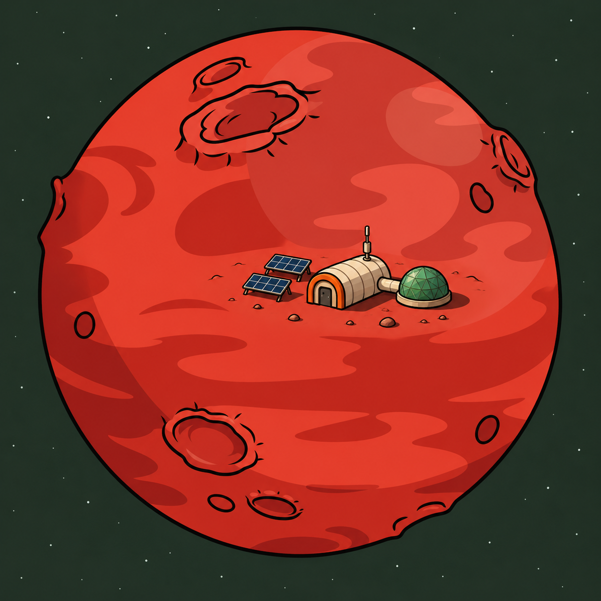
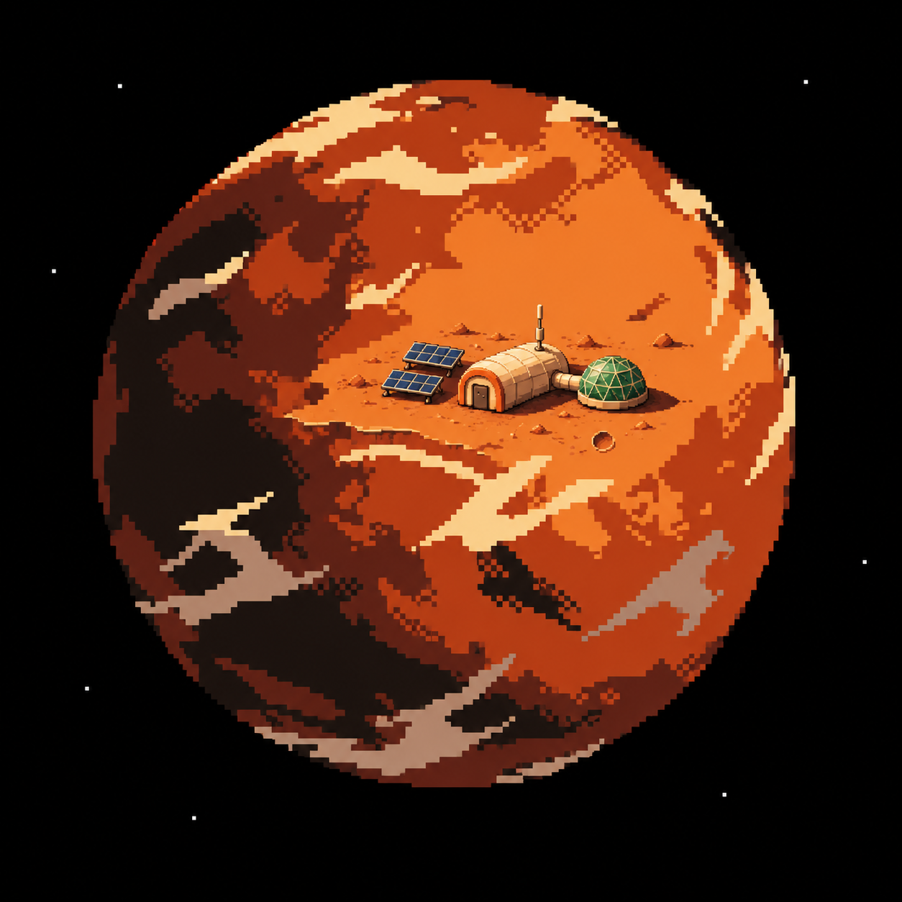
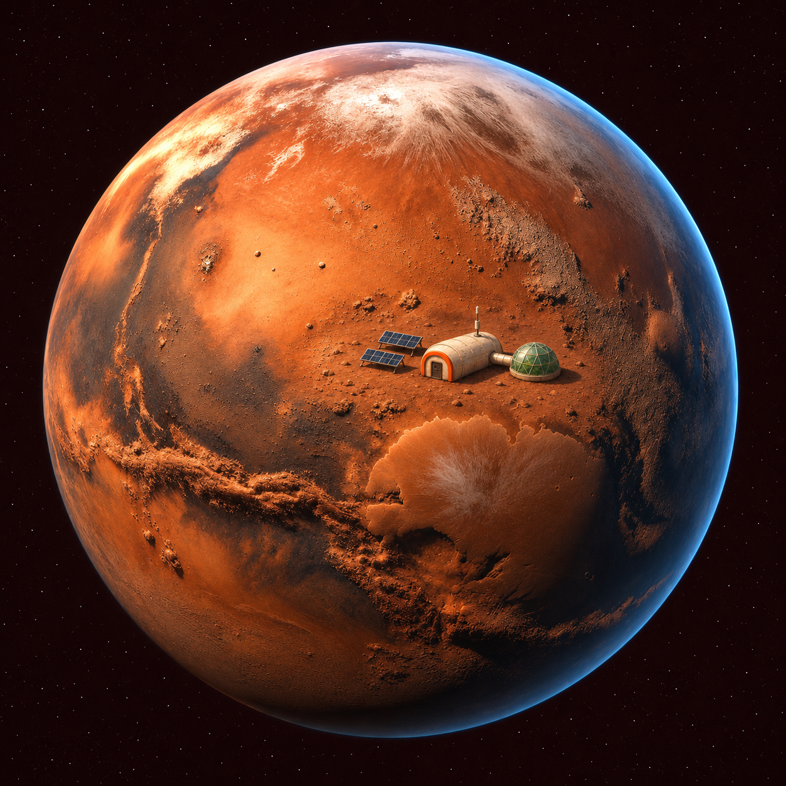

A gentler start, with plentiful solar power and more room to recover.

A balanced expedition. Plan your supplies and make each day count.

Scarce power and demanding upkeep leave little room for mistakes.
OUTPOST / OPERATIONS
Complete tasks here. Checked tasks are finished; unchecked tasks show what remains. One work assignment per Sol.